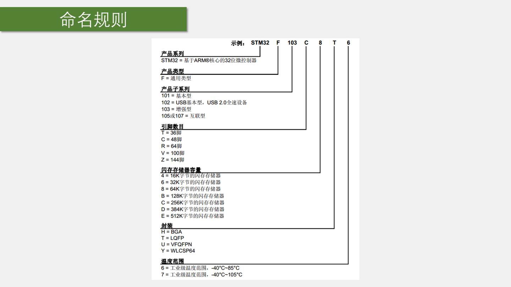
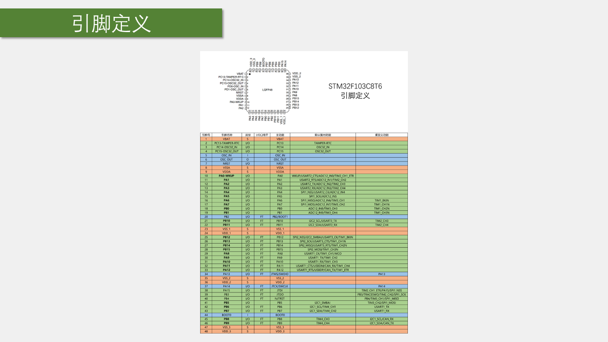
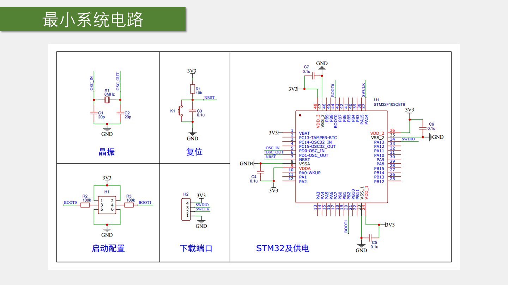

这一课要解决的问题
本课目标
读完你能做到四件事：拆读一个 STM32 型号的每一位；说清最小系统由哪几部分组成；在一张存储地图上指出"代码、变量、外设"分别在哪；知道程序是通过哪两根线写进芯片的。
下面这些问题，都是新手第一周最容易卡住的地方：
- 板子插上 USB，电脑为什么什么反应都没有？
- 为什么非要一个叫 ST-Link 的小东西？
- BOOT0 那个跳线到底在干吗，接错了会怎样？
- 教程里说"F103 有 DAC"，我这块为什么没有？
这一课不写代码，但把这块板讲透，后面所有课都能省一半时间。
1. 你手里拿到的到底是什么
把蓝板放在桌上，你看到的是：一块黑色方形芯片、两根各 20 针的排针、一个 USB 口、一个复位按键、两个小金属壳（晶振）、一个 2×3 的跳线帽。
把它和 Arduino 对比一下就能理解差别：
- Arduino 像一个装好系统的整机：插上 USB 就能烧程序，因为它板上多了一颗"USB 转串口"芯片，出厂还带了 bootloader。
- STM32 蓝板 像只买了主板和 CPU 的电脑：芯片本身很能打（72MHz、几十个外设），但没有任何东西帮你把程序送进去，也没有出厂程序。USB 口是直接连到芯片的 PA11/PA12 的，只有你自己写了 USB 代码，它才会被电脑认出来。
关键结论
一句话：蓝板 = STM32F103C8T6 芯片 + 让它"能通电跑起来"的最小外围电路。它不是一个成品开发板，是一个需要你自己下载程序的"裸机"。
所以第一件要买的东西不是别的，是 ST-Link V2（十几块钱的克隆版就够）。它负责把你电脑里的程序写进芯片，还能让你在芯片运行时看变量——这个能力叫在线调试，是后面排查问题的命根子。
2. 型号 STM32F103C8T6 是怎么命名的
这串字符不是随便编的，每一位都有含义。学会拆读，你就能一眼看出别人的板子和你的差在哪。
| 段 | 本例 | 含义 |
|---|---|---|
| STM32 | STM32 | ST 公司的 32 位 MCU 家族 |
| F | f | 产品类型：F = 通用型（L=低功耗，H=高性能，G=主流） |
| 103 | 103 | 子系列，103 就是那批 Cortex-M3 的基础型号 |
| C | c | 引脚数：C = 48 脚（T=36，R=64，V=100，Z=144，I=176） |
| 8 | 8 | Flash 容量：8 = 64KB（4=16K，6=32K，B=128K，C=256K，E=512K） |
| T | t | 封装：T = LQFP（方形四边出脚） |
| 6 | 6 | 温度等级：6 = -40 ~ 85℃ 工业级（7 = -40 ~ 105℃） |
注意
注意两个不在型号里但很关键的信息：SRAM 是 20KB，封装是 LQFP48（7×7mm）。这两条在你的数据手册第一页就能查到，后面写代码时随时会被它们限制。
练习 1：解码型号
STM32F103RBT6 这块芯片是多少引脚、多大 Flash、什么封装、什么温度范围？
参考答案
- R → 64 脚
- B → 128KB Flash
- T → LQFP 封装
- 6 → -40 ~ 85℃
所以它是 64 脚的 F103，Flash 比你的 C8T6 大一倍。这类"同系列换容量"的芯片，外设几乎一样，教程可以通用。
3. 芯片内部：内核不等于外设
很多人把"STM32"和"ARM"混着说，其实这是两件事：
- Cortex-M3 是内核：ARM 公司设计的"大脑"，负责取指令、执行运算、处理中断。它只懂运算和访问地址，不知道什么叫串口。
- STM32 是芯片：ST 公司在 Cortex-M3 周围加了 Flash、SRAM、和各种外设（GPIO、串口、定时器、ADC），再用总线把它们连起来。
用类比说：Cortex-M3 是发动机，STM32 是整辆车。你写代码时感觉在"操作 STM32"，实际上一部分指令进了内核，另一部分是在给外设的寄存器写值。
C8T6 这一颗的具体家当（这些都是数据手册里能查到的硬指标）：
| 项目 | 参数 | 对你的实际影响 |
|---|---|---|
| 内核 | Cortex-M3，最高 72MHz | 一条指令约十几纳秒，够做绝大多数控制 |
| Flash | 64KB | 放代码 + 常量。HAL 库本身要占十几 KB，别乱加功能 |
| SRAM | 20KB | 放变量、数组、栈。一个大 buffer 就能撑爆 |
| GPIO | 37 个 | 排针能引出大部分，但不是全部 |
| 串口 | 3 个 USART | USART1 在 PA9/PA10，最常用于接电脑 |
| SPI / I²C | 2 个 / 2 个 | 接屏幕、Flash、传感器 |
| CAN / USB | 各有 1 个 | 蓝板 USB 口直连 PA11/PA12 |
| ADC | 2 个 12 位，共 10 通道 | 测电压、读模拟传感器 |
| 定时器 | TIM1 高级 + TIM2/3/4 通用 + TIM6/7 基本 | PWM、测频率、做时基全靠它们 |
注意
C8T6 没有 DAC。DAC（数字转模拟输出）只在 F103 的"大容量"型号上有。你在网上看到"用 F103 的 DAC 输出正弦波"的教程，那是 ZET6/ VET6 那类板子，别照抄。同理，C8T6 也没有 FSMC（接并口屏）和 SDIO。
深入一步
为什么特别强调"没有"？因为嵌入式学习里最贵的错误不是不会写代码，而是照着别人板子的教程，在自己不兼容的板子上折腾三天。先知道自己的边界，比多学一个外设重要。
4. 最小系统：让芯片能跑起来的最低配置
芯片不是插上电就能工作的。它需要五个条件同时满足，这五个加起来叫最小系统。
一条一条说清楚，以及配错了会看到什么：
电源 3.3V —— 芯片的工作电压是 2.0~3.6V，典型 3.3V。所有 GPIO 输出高电平也只有 3.3V，不是 5V。蓝板上的 "5V" 引脚来自 USB 的 VBUS，只是给你往外供电用的，不要把 5V 信号直接接到 GPIO。
两个晶振 —— 8MHz 那个是主时钟源头（叫 HSE），后面要靠它倍频到 72MHz；32.768kHz 那个只服务 RTC 实时时钟。两个都靠"石英晶振 + 两个负载电容"起振。
复位 —— NRST 引脚平时被电阻拉到高电平，你一按复位键把它拉低，芯片就从头开始执行。蓝板上那个小按键就是干这个的。
启动模式 —— 两个 BOOT 引脚决定芯片复位后从哪里取第一条指令：
| BOOT0 | BOOT1 | 从哪启动 | 用来干什么 |
|---|---|---|---|
| 0 | × | 主 Flash（0x0800_0000） | 正常运行你写的程序（平时就接这个） |
| 1 | 0 | 系统存储器（出厂 bootloader） | 用串口 USART1 下载程序，ST-Link 坏了的备用招 |
| 1 | 1 | 内置 SRAM | 调试用，几乎没人用 |
注意
蓝板上电后没反应，第一个要检查的就是 BOOT0 跳线。如果它被插在 1 那边，你烧进去的程序根本不会执行，现象是"烧写成功但灯不亮"。这个坑几乎每个新手都会踩一次。
5. 程序存在哪：一张存储地图
这是本课最值钱的一张表。以后所有"为什么变量会丢""为什么栈溢出"的问题，都能在这张表上解释。
| 起始地址 | 区域 | 大小（C8T6） | 里面放什么 |
|---|---|---|---|
0x0800_0000 |
Flash | 64KB（到 0x0800_FFFF） |
你写的代码、常量字符串、初始化的全局变量初值 |
0x2000_0000 |
SRAM | 20KB（到 0x2000_4FFF） |
全局变量、局部变量、数组、栈（stack） |
0x4000_0000 |
外设寄存器 | — | GPIO、串口、定时器的控制寄存器都映射到这里 |
0xE000_0000 |
内核私有 | — | NVIC（中断控制器）、SysTick 定时器 |
几个马上能用上的推论：
- 掉电就丢的是 SRAM，Flash 里的东西断电不丢，所以配置参数要存 Flash 而不是普通变量。
0x2000_0000往上是 20KB，你定义一个float buf[6000]就是 24KB，编译能过但链接会报region RAM overflowed，因为根本放不下。- 外设也是"地址"：你在代码里写
GPIOA->ODR = 0x2000，本质上是在往0x4002_080C这个地址写值。HAL 库只是替你在做这件事。
关键结论
把外设看成"内存地址"，是从"会用库"到"懂单片机"的分水岭，也是面试里"寄存器映射"这类问题的标准答案。
练习 2：算地址和容量
(1) C8T6 的 Flash 64KB，末地址是多少？(2) SRAM 20KB，末地址是多少？(3) 下面两个定义哪个会导致链接失败：int a[100] 还是 float b[6000]？
参考答案
(1) 0x0800_0000 + 0x1_0000 - 1 = 0x0800_FFFF（64KB = 0x10000 字节）
(2) 0x2000_0000 + 0x5000 - 1 = 0x2000_4FFF（20KB = 0x5000 字节）
(3) int a[100] = 400 字节，没问题；float b[6000] = 6000×4 = 24000 字节 ≈ 23.4KB，超过 20KB SRAM，链接阶段会报 RAM 溢出。注意它编译能通过，是链接才知道放不下——这也是面试常问的"编译错误和链接错误的区别"的一个实例。
6. 程序是怎么进芯片的
这条链路要背下来，因为出问题时你要按顺序排查：
关键点：
- SWD 只要两根信号线：SWDIO（PA13）和 SWCLK（PA14），再加 GND 和 3.3V 供电，一共四根。这就是为什么 ST-Link 那 4 个孔就能干活。
- 芯片每次复位，从 Flash 开头取指令。Flash 的第一个位置放的不是代码，是中断向量表（一张"出事了该跳哪"的地址清单），所以它必须固定放在最前面。
- 下载成功 ≠ 会运行：还有 BOOT0 跳线、复位、供电三关。
例子：烧写成功但灯不亮，怎么按顺序查
- BOOT0 是不是接到 0？（最常见）
- 按一下复位键，是不是跑飞了？
- ST-Link 的 3.3V 有没有真的接到板子？（只接 GND 和 SWD 两根也能"识别"芯片，但供电不足会行为异常）
- LED 是不是接在 PC13 而且低电平才亮？（写 1 反而熄灭）
7. 拿到板子第一件事：三项检查
在写第一行代码之前先做这三件事，能避免 90% 的"板子是不是坏了"：
- 目测跳线：BOOT0 跳到 0 那边（靠近板子边缘的位置通常标着 0）。
- 断电测短路：万用表蜂鸣档，量 3V3 与 GND 之间不应该导通。导通说明板子或你的接线短路了，别上电。
- 上电测电压：用 ST-Link 的 3.3V 供电（或 USB），量 3V3 引脚对 GND 应该读到约 3.3V。
注意
永远不要用 5V 去喂 3.3V 引脚，也不要把 5V 传感器的输出直接接 GPIO。5V 会顺着 IO 内部的保护二极管倒灌进 3.3V 电源网络，轻则读数异常，重则烧片。
8. 这一课的动手项目
动手项目
给这块板画一张"个人引脚地图"
拿一张纸（或在 notes/s1.md 里），画出蓝板两侧共 40 个排针，然后凭本课内容标出下面这些关键脚，标不出来的回去查数据手册：
- 供电：
3V3、GND、5V - 调试下载：
SWDIO(PA13)、SWCLK(PA14)、NRST - 启动：
BOOT0、BOOT1(PB2) - 板载资源：
PC13（LED，低电平点亮） - 通信：
PA9(TX)、PA10(RX)、PA11(USB D-)、PA12(USB D+)
验收标准：合上资料，能指着板子说出"下载用哪两根、供电用哪两个、为什么 PC13 写 0 才亮"。做到这一条，下一课接 ST-Link 时你不会接错线。
附：PPT 原图对照

PPT 第 9 页：型号命名规则。对照正文第 2 节逐位解码，图上把"系列/引脚数/容量/封装/温度"几段都标出来了。

PPT 第 11 页：引脚定义表。注意标着 FT 的脚是 5V 容忍；标着 ADC/TIM 的是复用功能，后面的课会用到。

PPT 第 13 页：最小系统电路。正文第 4 节讲"缺一个会怎样"，这一页把几个部分画在了一起，可以对照检查自己的板子。
9. 本课小结
- 蓝板是"裸机"，没有 USB 转串口芯片也没有出厂程序，必须用 ST-Link 通过 SWD 下载。
- 型号每一位都有含义：
C=48 脚、8=64KB Flash、T=LQFP、6=工业级。 - C8T6 是 Cortex-M3 @72MHz、64KB Flash、20KB SRAM、37 个 GPIO，没有 DAC。
- 最小系统 = 电源 + 时钟 + 复位 + 启动模式（+ SWD）。
- 存储地图：Flash 在
0x0800_0000，SRAM 在0x2000_0000，外设寄存器在0x4000_0000。 - 出问题先查三样：BOOT0 跳线、供电、复位。
自检
- 我能不看资料说出
STM32F103C8T6中每一位的含义 - 我能说出最小系统的五个组成部分
- 我能说出 Flash 和 SRAM 的起始地址和大小
- 我知道 SWD 用的是哪两个引脚
- 我知道 BOOT0=1、BOOT1=0 时芯片会干什么
- 我知道为什么 5V 不能直接接 GPIO
下一课预告：s2 第一个工程：CubeIDE + ST-Link 点灯与在线调试。你会亲手建出第一个工程、把程序烧进这块板、让 PC13 的灯闪起来，并学会用断点看变量——那是后面所有排查的起点。